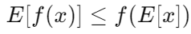

关于 VAEs
发布于 更新于

看了一圈，感觉理论方面最缺的可能是这一块。虽然和训练不是直接相关
https://www.youtube.com/watch?v=qJeaCHQ1k2w&ab_channel=Deepia


拓展

关于(variational) lower bound


此处证明的最后一步？
https://xyang35.github.io/2017/04/14/variational-lower-bound/ 中对琴生不等式的使用也是带过

logx 是凹函数，所以有

另外，推导中的这一句